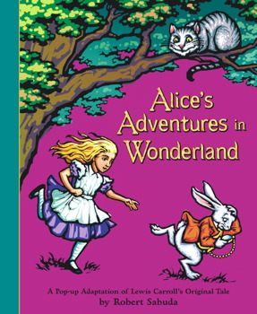

Alice Letter To The Author
By Omar Andre
Lewis Carrol’s Alice’s adventures in wonderland is, misleadingly, categorized as an adventure children’s book, but in reality it is more than that, it is a strange book, it doesn’t have a coherent plot, coherent characters, or even coherent thoughts from the narrator; you should read this novel if you’re up for a different type of reading experience.
The book follows Alice, a young British girl. The book starts off when Alice notices a talking rabbit, and, while she doesn’t find the talking rabbit very weird, she still decides to follow it. She follows the rabbit until it goes down a rabbit hole, and then she falls down it too. She falls for an abnormal amount of time, it shouldn’t be possible to fall for this long, but weirder still, she doesn’t think much of it. Alice, while falling down, starts saying fancy words like latitude and longitude while not knowing their definitions. This dynamic of really weird things happening and then Alice treating them as normal is repeated quite often throughout the story. After finally reaching the end of the tunnel, she falls and just shrugs it off. There is no coherent plot in this book, but the main objective of Alice, at least at the beginning, is to get in a garden that she saw through a door too small to go through. The rest of the story is unpredictable and borderline incoherent, it is the world expressing its madness and Alice acting like a child. A big appeal of the book, in my opinion, is the fact that the book is written from the perspective of a child. Strange things are happening all around, and the child being the narrator creates a kind of separation between narrator and reader; the world is unpredictable and incoherent, but the narrator is unpredictable and incoherent too, and in that way, it feels like Alice is kind of part of this world too.
Another appealing aspect of this novel are the characters, I think. Throughout the story Alice gets to meet a bunch of characters, and while I don’t wanna name many of them, because of spoiler reasons, I will name a couple that I found interesting. In general, all characters seem to represent some kind of attitude or single personality trait. The rabbit from the beginning of the story seems to serve mostly as a plot device, it appears multiple times throughout the story and it moves the story forward because Alice always tries to get closer to it. There’s a mouse that appears pretty early in the story, it seems to be the leader of a group of animals, and in that short “arc” of the story, Alice constantly brings up her cat, which, of course, the rat doesn’t really appreciate, because cats eat rats and all. And of course, the most iconic character from Alice in wonderland, the floating cat. This cat appears a little bit later in the story, but it is a magical cat that can appear and disappear at will, and this cat is the one that tells Alice that in this wonderland she fell in, everyone is “mad”; this makes it the only character that seems self-aware about the world it resides in. I overall found the characters pretty charming and interesting, and while some of their meanings evade me, I enjoyed the ones I was able to decipher and believe that the ones I didn’t have some meaning I just wasn't able to get. In putting all of these characters with their respective traits in this “mad world”, perhaps the Author is equating them in some way, perhaps Lewis Carrol is saying that they are all equally ridiculous and nonsensical.
While I overall enjoyed this book, I did find that it’s absolute nonsense of a plotline was sometimes frustrating. It sometimes felt that it spent too much time on things that it shouldn’t have focused that much on, on characters that are relevant for three pages and never come up again, on things that don’t do anything to tell us more about what’s going on in Wonderland. Because the whole book is mostly nonsense, there’s going to be some nonsense that feels more meaningful than another, and that seemingly meaningless part of the book will be a little bit more difficult to get through than the rest of the book.
I would say it is an overall entertaining book, it’s biggest flaw being that it has a nonsensical plotline that might not be for everyone, and that some parts of the book feel a little meaningless and dragged out, overall I would rate this book 3 out of 5 stars and would recommend it to readers who are interested in a different type of reading experience.